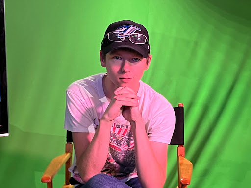
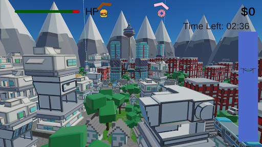

About Me!
Hey what’s up I’m Shane Colby and this is my Game Dev Tips Website Made for a very cool web design class run by a very awesome person. I’m a 21 year old amateur Game Developer and Student at OCAD University.
Since I was a kid I’ve always been obsessed with the idea of games and to a game obsessed child Video Games were the coolest thing ever, games without limits. You could be anything and do anything. So when I was 10 and after a lot of begging my parents, they finally got me an Xbox for christmas which in later years they considered “a bad move”. Still love became an obsession and after spending a lot of my life learning everything I could about games I finally had the opportunity to make a game in a high school course in which I could do anything. I only had a week to make it because of some unrelated brain surgery I made a silly little maze game GameMaker 8 lite, the only game engine I could get past the school firewall. AThe next year I got another opportunity and made a little twin stick shooter called Go And Be Tank. Which I used in my portfolio to get me where I am today.

The two works I’m the most proud of at the moment are a top down simple arena shooter called Go And Be Tank (an unfinished remake of my high school game) and Drone Delivery, a game made by me and 9 other people for a collaborative course. Which are linked to my itch page. While neither of these are 10 out of 10 games they show my growth as a game developer and have helped learn more and more of the Unity Engine.

I hope you enjoy this site, it’s kind of a beta version of a portfolio website I’d like to make at a certain point. Thanks for checking out my website!
Go And Be Tank page
Drone Delivery page